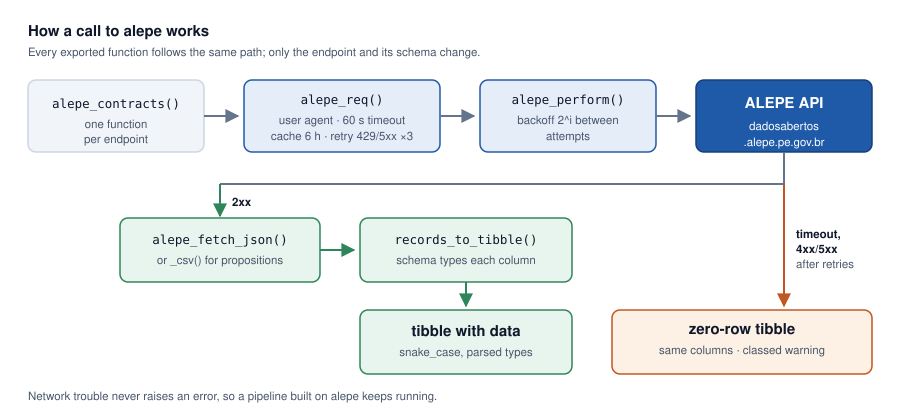

alepe  ¶
¶


Tidy access from Python to the open data API of the Legislative Assembly of the State of Pernambuco, Brazil (ALEPE): representatives, staff, positions, departments, remuneration, contracts, procurement and legislative propositions — as pandas frames with clean names and parsed types.
This is the Python sibling of the R package alepe; both wrap the same endpoints and produce the same column names.
Installation¶
pip install alepe
Quick start¶
import alepe
# Current representatives
alepe.representatives()
# Permanent staff, largest departments
alepe.staff(status="permanent").value_counts("nome_lotacao")
# Contracts active today
import datetime as dt
today = dt.date.today()
contracts = alepe.contracts()
contracts[(contracts.vigencia_inicio <= today) & (contracts.vigencia_fim >= today)]
# Bills of a given year
alepe.bills(year=2024)
Column names keep the official Portuguese field names, normalised to
snake_case, so a result stays traceable to its source. Filter values accept
both vocabularies — status="permanent" and status="efetivo" are the same
query.
Em português¶
Cada função tem um alias com o nome do próprio endpoint da API, para quem prefere manter o pipeline inteiro em português:
alepe.parlamentares()
alepe.servidores(status="efetivo")
alepe.contratos()
alepe.projetos(ano=2024)
cargos(), lotacoes(), remuneracao(), licitacoes(), indicacoes(),
requerimentos() e limpar_cache() completam o conjunto.
How it works¶
Every function is a thin wrapper over the same core: a cached, retrying request whose response is typed into a frame by a documented schema.

What the package handles for you¶
The API is generated from an internal system and shows it. Three quirks would otherwise produce quietly wrong numbers:
- Two naming conventions at once.
NOME_LOTACAOfrom/servidores,nomeParlamentarfrom/parlamentares. Both becomenome_lotacaoandnome_parlamentar. - Two number encodings at once.
"1.234,56"in some fields and float-formatted strings such as"119267.04"in others. Reading either with a fixed locale corrupts the other — a Brazilian locale turns119267.04into 11 926 704. The parser decides per value. - Dates in three shapes, including serialised
DateTimeobjects ({"date": "2026-05-05 00:00:00.000000", ...}).
The propositions endpoints answer XML embedded in CSV; the package parses it into ordinary columns and strips the HTML markup out of the free-text fields.
Caching, retries and failures¶
Responses are cached for six hours in the session's temporary directory. Set
ALEPE_CACHE_DIR, or call alepe.cache_dir(path), to keep them between
sessions; alepe.cache_clear() empties it, and any call takes refresh=True
to bypass it.
Requests are retried up to three times on 429 and 5xx with exponential backoff,
with a 60-second timeout. That default is measured, not habitual:
/licitacoes regularly takes 25–30 seconds to answer, and the service cuts its
own query off at 30 seconds, so a 30-second client timeout fails on margin
alone.
When the API cannot be reached, the call raises AlepeHTTPError, carrying the
status code and the URL. This is where the two siblings differ on purpose:
CRAN's policy on internet resources requires the R package to warn and return
an empty result instead of stopping, while a silent empty frame would be
surprising in Python.
try:
frame = alepe.procurements()
except alepe.AlepeHTTPError as err:
print(f"ALEPE is not answering ({err.status}); carrying on without it")
frame = alepe.empty("procurements")
alepe.empty(name) returns a correctly typed empty frame for any endpoint,
which is what you want when a pipeline downstream expects the columns to exist
either way.
Related packages¶
Part of a family of clients for Brazilian public data published under StrategicProjects, with siblings in R on CRAN: tceper (Pernambuco Court of Accounts), transferegovr and its Python twin transferegovpy, tesouror, comexr, datasusr, ibger and pixr.
Citation¶
Archived on Zenodo. The DOI above is the concept DOI: it always resolves to
the latest version. To cite the exact version you used, take its own DOI from
the Zenodo record, or read CITATION.cff.
License¶
MIT.